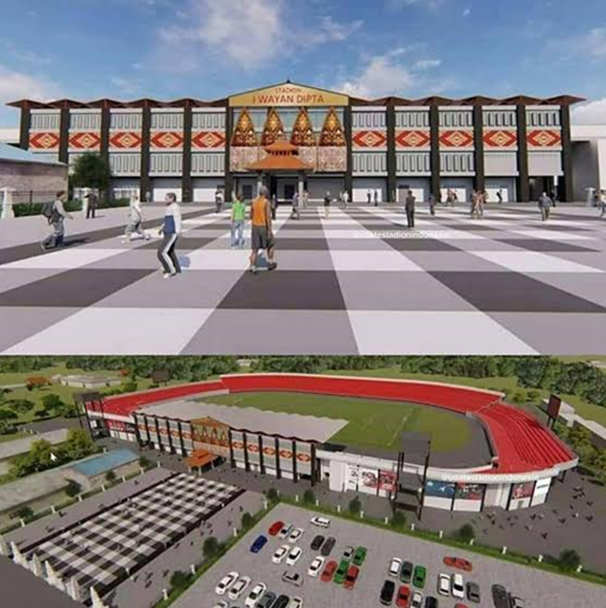

|

|
|
|
|
5 April 2019
SPYROS has been awarded the contract to supply and install the timing system and scoreboard for the Papua Aquatic Centre. The Sports venue will host the swimming and diving competitions of the popular National Sport Week 2020.

23 April 2019
We are pleased to inform you that we will participate in the Indonesia Sport Expo & Forum (ISEF). The first ever exhibition & forum in Indonesia that will integrate building & technologies with sport facilities development plans from public and private sectors in Indonesia, the largest market in Southeast Asia.
We will be displaying the most innovative equipment and solutions of the brands we represent in Indonesia.
We look forward to welcoming you!

31 May 2019
We are proud to announce that SPYROS and Figueras Seating Solutions have signed a collaboration agreement for the distribution in Indonesia of all Figueras products for Sports Stadium venues.
Figueras appoints Spyros as its exclusive distributor because of our knowledge in the field an expertise in providing turn key solutions.
Figueras International Seating is a leading global firm that leverages its specialized engineering and design capabilities to produce innovative high-end seating for public and multipurpose spaces.
All Figueras products are made at its 30,000-m² manufacturing facility near Barcelona (Spain).

18 September 2019
Spyros is to supply and install timing system and scoreboard for Aquatic Centre and Athletics at the Ragunan Sport Complex in South Jakarta.
In addition to this, Spyros will supply and build the scoreboard for Football, Basketball, Volleyball, Beach volley, Tennis court, Badminton, Futsal, Table tennis and Takraw.
The Ragunan Sport Complex was built in 1973 to be the student Sports Training Centre of Jakarta province. It is currently being renovated following the international sport federations standards.

21 Oktober 2019
At SPYROS, we have a strong commitment on environmental, social, and governance issues. As part of our ESG agenda, we have been awarded the triple certificate that covers quality management system (QMS), effective environmental management system (EMS), and occupational health and safety management system, according to ISO 9001, ISO 14001 and OSHAS 18001.
The board of directors has set clear ESG guidelines for the Company and its overseeing its roll-out and implementation.

22 April 2020
On April 2020 our Project Management Team completed the hand-over for the score boards and timing systems for the Ragunan Sport Complex, Jakarta. For this venue we supplied the scoreboards for the stadiums such as: badminton, table tennis, basketball, football, takraw, tennis, futsal and volley ball (outdoor, indoor and beach volley ball). 24 score boards in total.
For the timing system we equipped the aquatic center as well as the athletic track and field.
Congratulations to the Jakarta Province Government for such amazing renovated training center, and lots of success for the young athletes.

30 July 2020
SPYROS has successfully completed the handover of the Arena Aquatic Papua project.
The Aquatic Centre is built as preparation for Pekan Olah Raga Nasional (PON) 2022, a National Sport Championship in Indonesia.
We started our work in Papua on April 2019, as part to support PT Waskita Karya as Main Contractor. Spyros took part in providing the score board and a complete set of timing system for the competition pools, which include Olympic size pool, water polo pool, synchronize swimming pool and diving pool.
Despite the Covid-19 travel restrictions implemented to further reduce the risk of infection cases in Papua, our team has managed to complete the project on time. Well done!

01 March 2021
I Wayan Dipta Gianyar is a multi-function stadium that was built in 1977 located in Gianyar region in Bali. This stadium is appointed by the Ministry of Sports and Youth Affairs as one of the venues that will hold 2021 FIFA U-20 World Cup. On 2020, SPYROS is very honored to be chosen as one of the suppliers of scoreboards, to help the venue by meeting the standards of 2021 FIFA U-20 World Cup. This venue is also the home for Bali United Soccer Team.
Besides supplying high quality scoreboards, SPYROS will also lead the team to assemble the scoreboards for this famous soccer stadium with capacity of 25.000 seats.
As the contract going, SPYROS is currently fulfilling the procurement process that is expected to be completed on March 2021.
Although sadly, this event will be postponed until 2023.

26 October 2021
The XX 2021 Papua National Sports Week (PON) just ended a week ago but the long story that led to the holding of this grand national sporting event cannot be forgotten. The toughest ordeal of this event is, of course, the COVID-19 outbreak which has hit globally in almost 99% of countries in the world. The event which was supposed to be held in 2020 also experienced a delay in its implementation for almost 1 year for reasons of security, health and safety of all parties. As COVID 19 is getting more under control, the certainty of this event has finally found its end.
One of the keys to the success of organizing the XX 2021 PON is the strong unity and integrity of the Indonesian nation as a pluralistic nation. Even the Vice President of the Republic of Indonesia, Mr. Ma'ruf Amin, said that the XX 2021 PON is the most difficult PON in the long history of PON from the beginning to the present. But it turned out that the determination & support was not only for Papua’s people, but all parties involved were able to realize this event. This is in line with the motto “Torang Bisa!” (Papua Language = We Can)
Spyros Eurotech Solutions, as one of the supporters of this event, has had a long and winding journey in providing the best support. Of course, as one of the nation's children, Spyros does not want to disappoint those who give this great trust. One by one the challenges were conquered by Spyros and ended with a sweet story with the running of PON XX Papua 2021 smoothly without any significant obstacles.


26 October 2021
The Covid 19 outbreak was the biggest reason until finally 4 regions were selected for the implementation of the XX Papua PON 2021. The four regions are Jayapura City, Jayapura Regency, Mimika Regency, and Merauke Regency. These areas are considered relatively safe from COVID-19 transmission because it is measured by vaccination coverage reaching an average of 60 percent of the population as body protection from the risk of transmission. This is important because this sporting event will be attended by more than 6000 athletes and officials from 34 provinces in Indonesia.
The division of region also results in the different region of venues/sports-centers which are used for the sports that are competed. Including Spyros, which has been trusted to support Aquatic and Athletic venues. These two venues are located in Jayapura City for Aquatic and Timika City (Mimika Regency) for Athletic venues. The distance between the two is approximately 458 km/284 miles or approximately 5 hours away by car. Not an easy trip because of the contours of the road in the form of hills. The technical team had to be divided into two to make the work easier.
But that doesn't stop Spyros from doing its job. The Giant Scoring Board for the Venue Aquatic and the Timing System at the Venue Athletic is installed perfectly. There are no significant obstacles in its operation during the event. Spyros technical team worked hard to complete the work on time, no matter the time of day and the weather which often changed from hot to rainy without any warning. Of course, only one goal Spyros, to provide the best results for this event. Did it materialize? With the acknowledgment from PB (Main Committee) PON that Spyros as one of the supporters of PON XX Papua 2021 who is doing a good job, Yes Spyros did it!